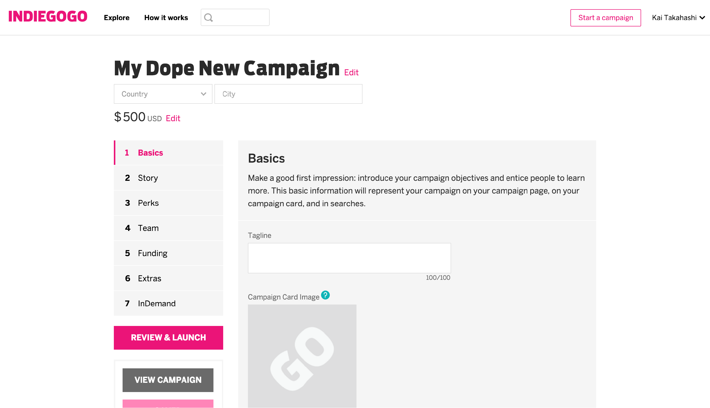
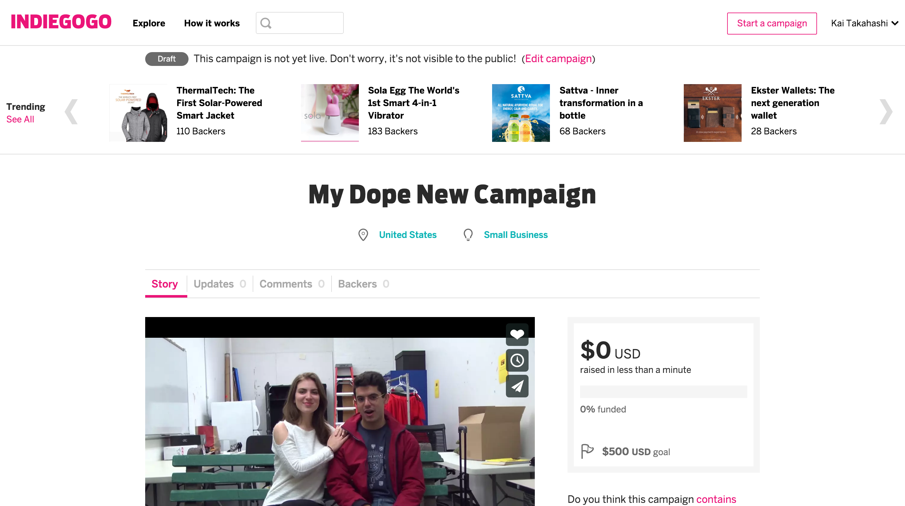
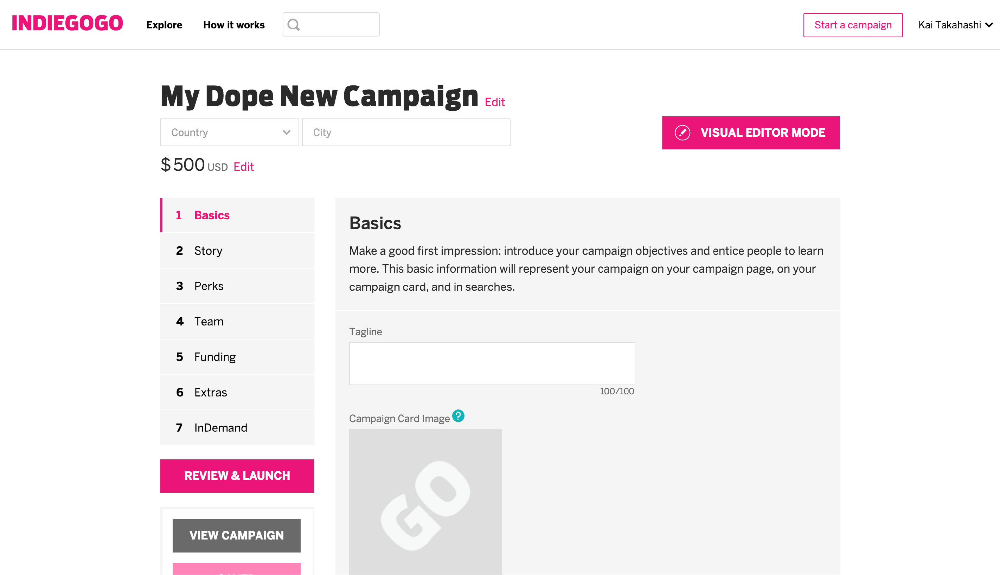
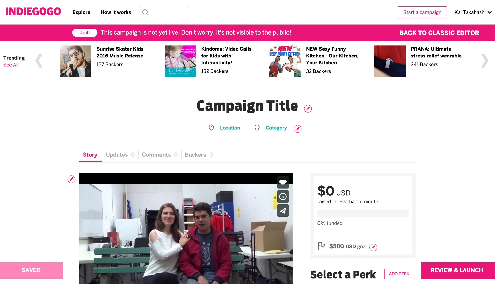
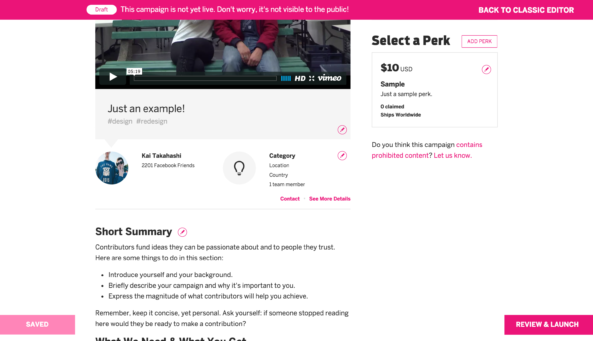
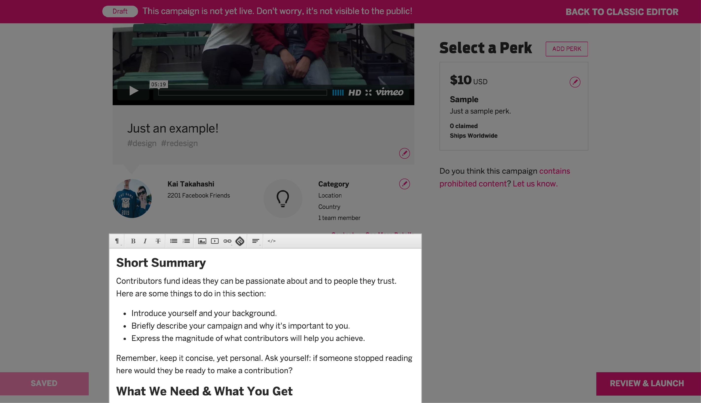
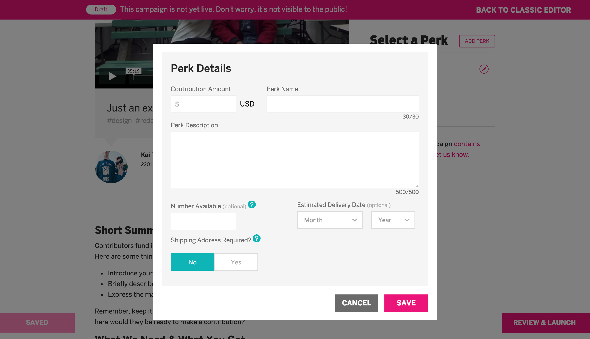
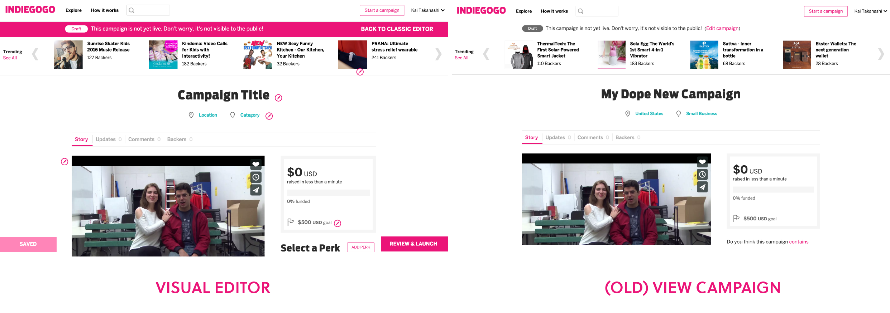

I designed a concept for a visual editor mode on Indiegogo's campaign creation.
I was exploring the campaign-making process for Indiegogo (just in case I come up with a world-changing idea). I noticed that in order to see where each piece of information I entered would go, I kept having to flip between the information entry mode and the ‘view campaign’.
 This intermediate step annoyed me as I kept experimenting with different information tweaks. I found it easier to use Chrome Web Inspector to edit information, since it’s nice to see and know exactly where each piece of the story goes. Because Indiegogo campaigns are such an essential tool for many people and companies—the difference between getting off the ground or flopping—getting everything to look just right is crucial.
I started to conceptualize a visual editor mode to create a new campaign. While I originally conceived this idea as something to replace the traditional campaign entry, I realized that it might not be the ideal format for everyone (especially people who have experience running Indiegogo campaigns and want to input data quickly). The visual editor, then, should just be an optional mode that newcomers and visually-minded people could toggle on.
 The visual editor mode looks almost identical to the actual campaign page, with the addition of a fixed pink bar across the top that ensures the user that this isn’t the live page—a more prominent version than the one included in the ‘view campaign’ feature. This bar also has a link back to the classic editor.
Next to each editable section is an edit button (symbolized by a pencil) that allows the user to click and edit each section easily. For more complex sections, like the Short Summary and Perks, clicking the edit button would launch a pop-up window that mirrors the data input from the classic editor (darkening the page behind it).
 Finally the ‘save’ and ‘review & launch’ buttons from the classic editor are fixed at the bottom of the screen.
